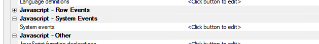
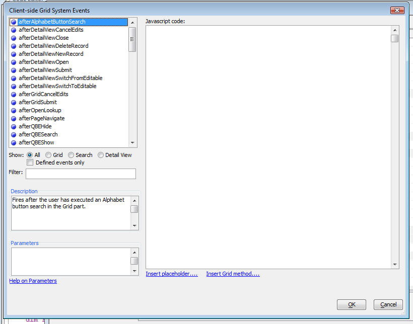

Client-side System Events
The Grid Object exposes a very rich system of client-side events that you can use to customize the Grid behavior. Event handlers for client-side system events are coded using Javascript.
Below is a list of client-side events that are exposed to the developer:
- afterAjaxCallbackComplete
- afterAlphabetButtonSearch
- afterDetailViewCancelEdits
- afterDetailViewDeleteRecord
- afterDetailViewNewRecord
- afterDetailViewOpen
- afterDetailViewSubmit
- afterDetailViewSwitchFromEditable
- afterDetailViewSwitchToEditable
- afterGridCancelEdits
- afterGridSubmit
- afterOpenLookup
- afterPageNavigate
- afterQBEHide
- afterQBESearch
- afterQBEShow
- afterQuickSearch
- afterRowCancelEdits
- afterRowCollapse
- afterRowDelete
- afterRowExpand
- afterRowSubmit
- afterRowSwitchFromEditable
- afterRowSwitchToEditable
- afterSearchClear
- afterSearchSubmit
- afterSetRowsPerPage
- afterSort
- canAlphabetButtonSearch
- canDetailViewCancelEdits
- canDetailViewClose
- canDetailViewDeleteRecord
- canDetailViewNewRecord
- canDetailViewOpen
- canDetailViewSubmit
- canDetailViewSwitchFromEditable
- canDetailViewSwitchToEditable
- canGridCancelEdits
- canGridSubmit
- canGridSubmit
- canOpenLookup
- canPageNavigate
- canQBEHide
- canQBESearch
- canQBEShow
- canQuickSearch
- canRowCancelEdits
- canRowCollapse
- canRowDelete
- canRowExpand
- canRowSubmit
- canRowSwitchFromEditable
- canRowSwitchToEditable
- canSearchClear
- canSearchSubmit
- canSearchSubmit
- canSetRowsPerPage
- canSort
- onDetailViewRender
- onDetailViewRender
- onDetailViewStateChange
- onGridRefresh
- onGridRender
- onNewRowsHide
- onNewRowsShow
- onObjectInitialize
- onRowBlur
- onRowFocus
- onRowRefresh
- onRowRender
- onRowStateChange
- onSearchRender
In order to define a client-side event expand the 'Javascript - System Events' property and then click on the smart field.

The Client-side Grid System Events dialog is opened. It shows all of the possible events and gives a short description of each event. If the event makes any data available to the executing Javascript code, the 'Parameters' section shows the names of the parameters.
You can use the 'Filter' box to filter the list of events to help you find the event you are looking for. You can also use the 'Defined events only' checkbox to quickly find the events for which you have defined code.

Inserting Placeholders and Grid Methods
When you write the Javascript event handlers, you might want to use certain placeholders in your Javascript. These placeholders get replaced by actual values when the Grid is rendered.
For example, the {Grid.componentName} placeholder gets replaced with the actual Grid alias at run-time.
To insert a placeholder in your code, click the 'Insert placeholder...' hyperlink.
Your Javascript code can call any of the methods that the Grid object exposes. To see a list of the methods, click the 'Insert Grid method...' placeholder.
Example of How to Use Client-Side Events
Say you wanted to put up a dialog that said 'Searching. Please wait..' while your Grid component was performing a search. As soon as the search completed, you want to remove the message.
To do this you would add code to the 'canSearchSubmit' event to show the message.
A5.msgBox.show('Searching...','
Then in the 'afterSearchSubmit' event, you would clear the message.
A5.msgBox.hide();